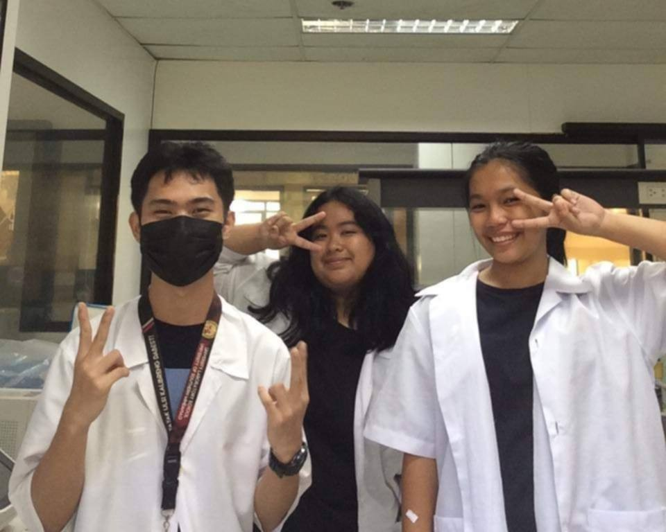
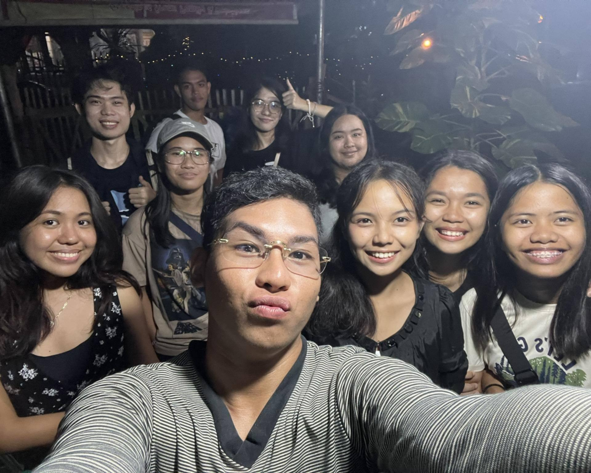
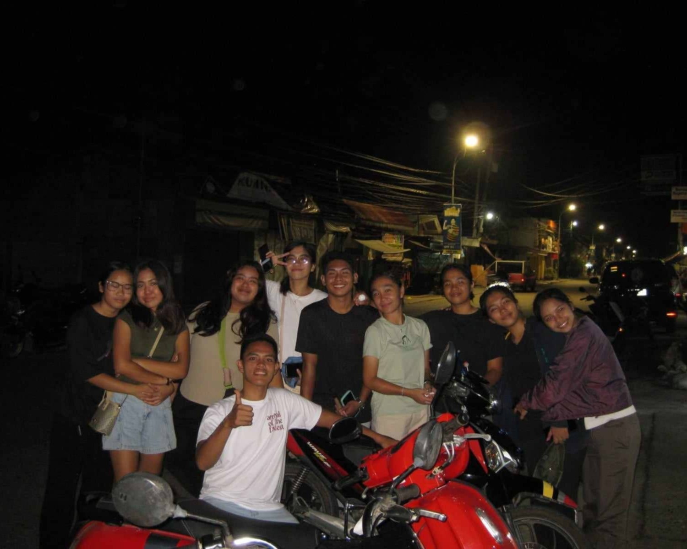
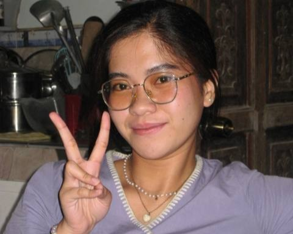
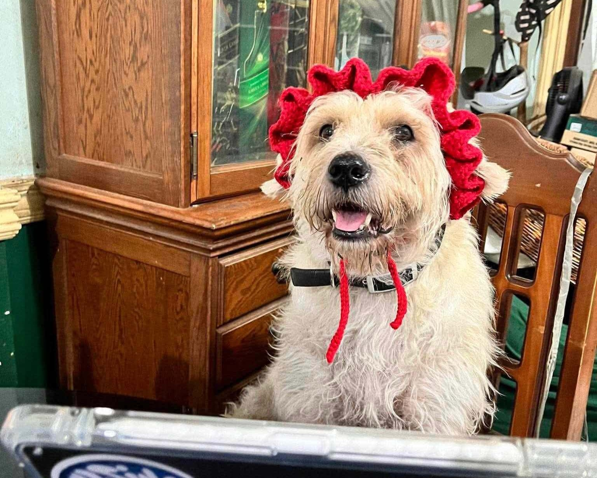
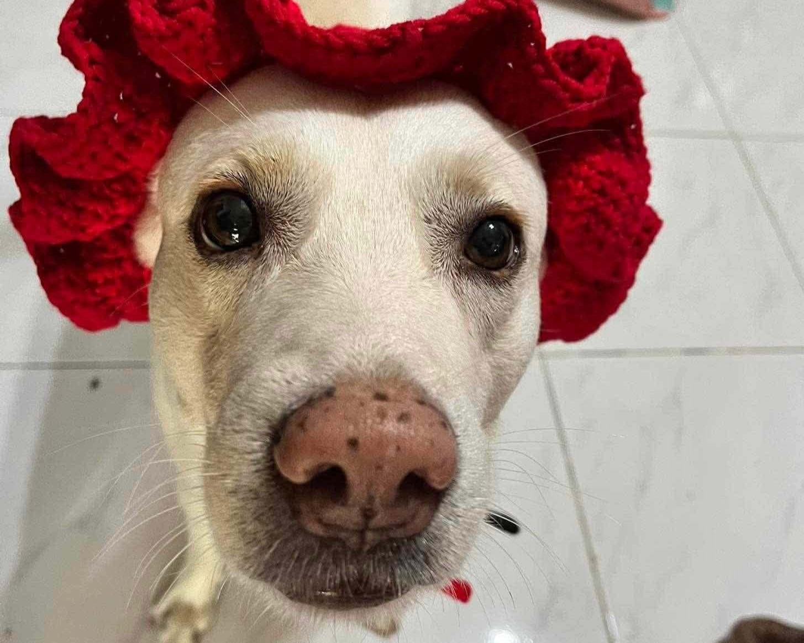
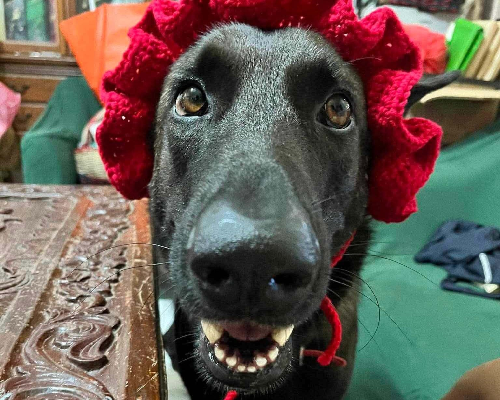

Welcome to My Gallery
Here, you will see snippets of my college life in the past three years and have a look of what my life was before college with people who are important in my life.
Here, you will see snippets of my college life in the past three years and have a look of what my life was before college with people who are important in my life.


 with fam.jpg)


.jpg)


As an eighteen year-old who left her hometown to pursue her studies, I cling to these images dearly.
Life moves on too fast, and looking back, I've realized that I left my hometown to pursue a dream that's not even mine.
I left to pursue a practical career, to live a life that's not truly mine. But as I look back and reminisce, my university life wasn't so bad after all.
I genuinely enjoyed it, and I'm looking forward to what the universe will align my life for.
I pray to the universe that life will be kind to me and to the people who value me.
Now, allow me to introduce my day ones, day twos, day forever. We've known each other since highschool, some even since kindergarten.
They've been one of the reasons that I'm still here and they are my "why".









These people became my safe space, my fortress, and my comfort. Despite being away from the, our frienship never faltered. I love you guys
Now, let me introduce my family. They are important in my life. I consider my family the foundation of my life.
Their support-physically, emotionally, or financially-helped me grow up and continue with what I have right now.
Despite all the flawed decisions I had in the past, they still support me to continue pursue what I want.
In the near future, I aim to give back to them and to give them a comfortable life that we all will enjoy.




